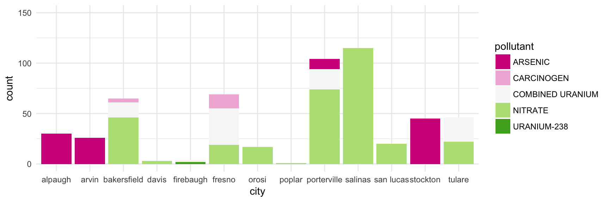
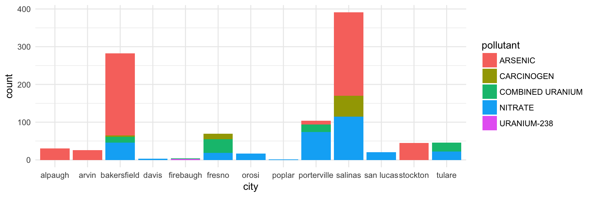

In 2012, California became the first state in the United States to recognize the human right to clean, affordable water (Assembly Bill 685). Now California recognizes that, “every human being has the right to safe, clean, affordable, and accessible water adequate for human consumption, cooking, and sanitary purposes.” (Water Code Section 106.3) The State Water Board made it a top priority to provide all humans their right to water through actions such as: “revising or establishing water quality control plans, policies, and grant critera; permitting; site remediation and monitoring; and water right administration.” (CA Water Boards)
The first step in developing new water systems is to first locate communities that do not have safe, clean water for drinking, cooking, and sanitary uses. While access to safe, clean water is now identified as a basic human right, over one million Californians are exposed to unsafe drinking water each year (Community Water Center). We found that there were data gaps in the California Water Boards data that tended to be small communities of low-income and therefore communities with little political voice.
The goal of Visualizing Voices is to make use of non-profit journalism to help identify where in space and when in time water systems in low-income communities have unacceptable water quality. We created a webscraper to identify key words or phrases to find relevant blog posts on the Community Water Center’s website. From these blog posts, we run the webpage’s HTML through a filter that contains the names of California cities to get a list of cities that the Community Water Center has published water quality data that is below compliance. This website compares the compliance data from the Community Water Board webscraping with the California Water Boards open source data for cities serviced by the Community Water Center (Arvin, Cutler, Ducor, East Orosi, East Porterville, Lamont, Monson, Poplar, Seville, and West Goshen). We hope that this model can be used to include other forms of news, to make use of the people’s voices to locate those who are in need.
We created this website to present some of the stories - visualize the voices - of what we have found thus far. For access to the data, please visit our github page.

